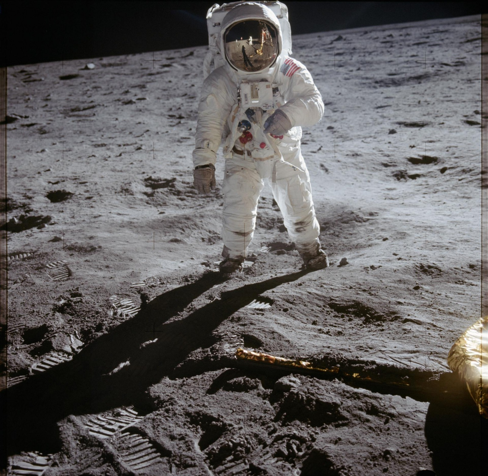
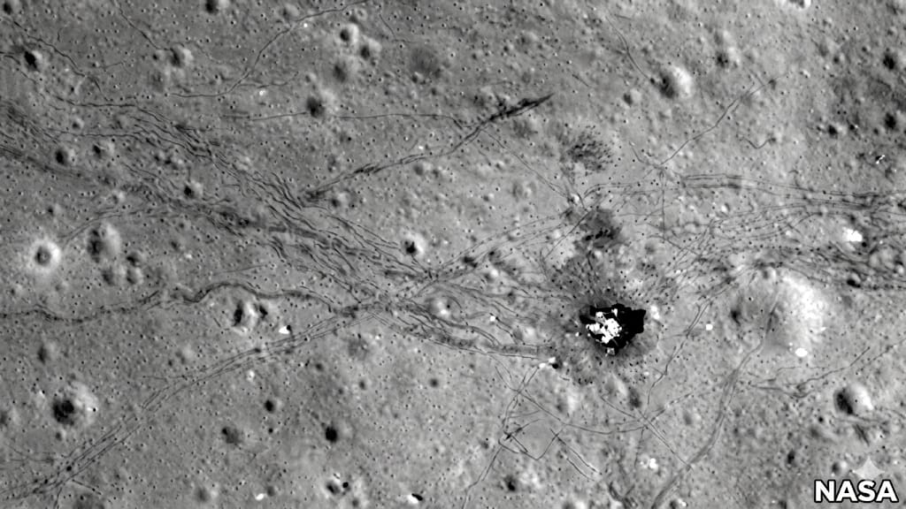
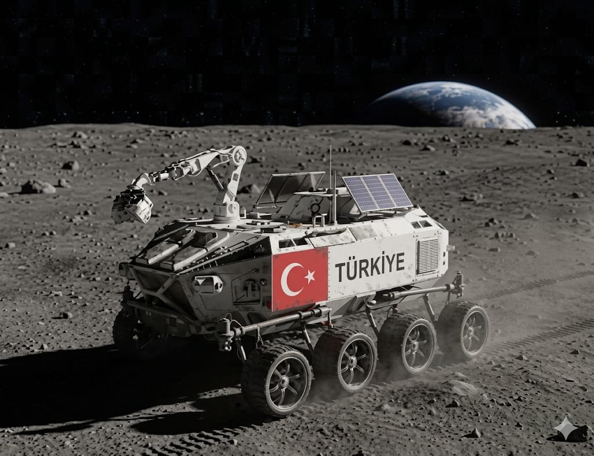
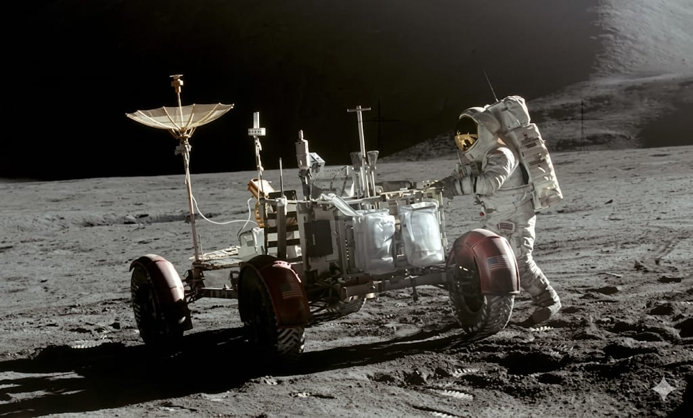
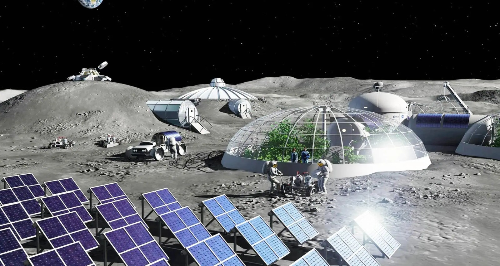

Apollo'nun Mirası ve Geleceğe Yolculuk
Geçmişin dev adımlarından, Türkiye'nin Ay vizyonuna ve insanlığın kalıcı yuvasına uzanan serüven...
👨🚀 Apollo 11: İnsanlığın Dev Adımı
1969 yılının Temmuz ayı, insanlık tarihinin en büyük sınırının aşıldığı an olarak kayıtlara geçti. Neil Armstrong’un Ay tozuna bıraktığı o ikonik bot izi, sadece bir fiziksel temas değil, imkansızın fethidir. "Bir insan için küçük, insanlık için dev bir adım" sözüyle perçinlenen bu görevde, ilk kez bir insan başka bir dünyadan Dünya’ya bakma şansı yakaladı. Armstrong ve Aldrin’in topladığı örnekler ve kurdukları deney düzenekleri, Ay biliminin temelini attı. O gün Ay, artık gökyüzünde bir süs değil, insanlığın ayak bastığı bir kıta haline geldi.

🌑 Sessizlik Dönemi: Ay’ın Unutulan Yılları
1972’deki son Apollo görevinden sonra, Ay yüzeyindeki insan izleri uzun bir sessizliğe terk edildi. Dünya’nın ilgisi daha yakın yörüngedeki uzay istasyonlarına ve diğer gezegenlere kaysa da, Ay aslında hiç unutulmadı. Bu süreçte yörüngede dönen insansız uydular, Ay’ın gizli kalmış karanlık yüzünü ve kutup bölgelerini santimetre hassasiyetinde haritalandırdı. Özellikle kutuplardaki derin kraterlerde buz halinde suyun bulunması, Ay’a dönüş heyecanını yeniden alevlendirdi. Bu sessiz yıllar, aslında bir sonraki büyük sıçrama için gereken stratejik hazırlık dönemiydi.

🇹🇷 Türkiye’nin Vizyonu: AYAP-1 ve İlk Temas
Türkiye, Milli Uzay Programı ile Ay serüvenine kendi mühendislik gücüyle dahil oluyor. AYAP-1 (Ay Araştırma Programı-1), yerli imkanlarla geliştirilen hibrit roket motorumuzun derin uzaydaki en büyük sınavı olacaktır. Bu görevin temel amacı, uzay aracımızı Ay yörüngesine başarıyla yerleştirerek bayrağımızı gökyüzünde dalgalandırmaktır. Bu adım, Türkiye’nin uzay teknolojilerinde sadece bir kullanıcı değil, kendi motoruyla mesafe kat eden bir üretici olduğunu dünyaya ilan edecektir.

🤖 Ay’a Türk İmzası: AYAP-2 ve Rover Macerası
Serüvenin ikinci ve daha iddialı aşaması olan AYAP-2, bizi doğrudan Ay’ın tozlu yüzeyine indirmeyi hedefliyor. Bu görevde, tamamen yerli tasarım bir iniş platformu kullanarak Ay’ın zorlu yüzeyine "yumuşak iniş" gerçekleştirmeyi hedefliyoruz. İniş platformunun başarılı olması, Türkiye’nin karmaşık uzay navigasyonu ve itki sistemlerinde ulaştığı zirveyi temsil edecektir.

🏗️ Artemis Programı: Ay’da Kalıcı Bir Yuva
İnsanlık bugün Ay’a sadece "gitmek" için değil, orada "kalmak" için dönüyor. NASA liderliğindeki Artemis programı, Ay’ın güney kutbunda sürdürülebilir bir yaşam alanı kurmayı ve ilk kadın astronotu yüzeye indirmeyi planlıyor. Bu programla birlikte Ay, insanlığın Dünya dışındaki ilk gerçek yerleşkesi olma yolunda ilerliyor.

1. Neil Armstrong’un Ay tozuna bıraktığı bot izi metinde neden "sadece fiziksel bir temas değil" olarak tanımlanmıştır?
2. 1972-2000 arasındaki "Sessizlik Dönemi"nde yapılan hangi teknik çalışma, Ay'a dönüş heyecanını başlatan "buz halinde su" keşfine zemin hazırlamıştır?
3. Türkiye'nin Milli Uzay Programı'ndaki AYAP-1 ve AYAP-2 görevleri arasındaki en temel stratejik fark nedir?
4. NASA liderliğindeki Artemis Programı'nı geçmişteki Apollo görevlerinden ayıran ana felsefe aşağıdakilerden hangisidir?